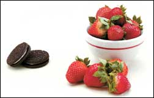

Use these tips to defeat the Sweet Tooth Monster!
You have decided to adopt a supernutritious, whole-foods diet. You’ve cleaned out your cupboards and revamped your refrigerator and pantry. You’ve stocked up on fresh, frozen and dried fruits and vegetables, refreshed your herb and spice racks, replaced refined grains with whole grains and swapped commercial animal products for organic and grass-fed versions. You’re primed for success.
But wait - you’re missing a critical ingredient! To create your own success story, you need sound strategies for dealing with the demon that destroys most diets - the Sweet Tooth Monster! To vanquish the monster and its dark desires, you need to understand what makes your body call out for sugary comfort foods and what you can do differently to appease that desire.
1. Problem: Irregular or missed meals.
Skipping meals or eating on an unpredictable schedule catapults your body into a state of starvation, depriving your brain and body of fuel. This sets you up to crave starchy or sugary foods for energy.
Solution: Eat at regular intervals throughout the day.
Plan to eat a nourishing minimeal every four to five hours until 7 or 8 p.m. Most people find this stabilizes their energy and prevents impulse eating and bingeing. Eating before you run out of energy can prevent sugar cravings.
2. Problem: Lack of sufficient dietary carbohydrates.
Low-carbohydrate diets often create cravings for starchy foods and sweets. The reason: the brain prefers running on glucose, supplied by carbohydrates. When you don’t consume enough carbohydrates to fuel your body, you get hungry, which many people experience as a craving for sweet foods.
Solution: Build meals and snacks around one or more carbohydrate-rich whole foods.
Examples include baked or roasted (not fried or instant) potatoes; sweet potatoes; dense root vegetables, such as carrots or parsnips; fresh fruits; or whole grains, such as brown or wild rice, millet, quinoa, buckwheat or 100-percent sprouted or sourdough whole-grain bread. At least twice a day, add colorful, fibrous vegetables - particularly greens (steamed or sautéed leafy greens, a tossed green salad or coleslaw), a dash of healthy fat or oil (nuts or seeds; olive, coconut or flax oil; butter; or avocado) and include a small portion of protein in each meal.
3. Problem: Lack of protein and fat.
If your diet is carbohydrate-heavy, particularly if you rely on refined carbohydrates, you may experience cravings for sweets. Your body requires a balance of nutrients. Protein and fat slow the release of carbohydrates into your bloodstream, stabilizing your energy. Protein-rich foods also pack important nutrients, and healthy fats and oils improve nutrient absorption, boost immunity and increase satiety at meals.
Solution: Eat mixed meals.
Meals containing a mix of complex carbohydrates, protein and fat work best to stabilize energy and avert sugar cravings. Here’s why: Carbohydrates digest quickly, providing fuel immediately after the meal. As the supply of carbohydrates drops off, protein becomes available. When that drops off, fat provides the long-term energy. Having a modest amount of protein and some friendly fat at each meal retards the return of hunger and may stave off sweet cravings.
4. Problem: Excessive salt intake.
Restaurants, fast-food eateries and processed food companies liberally season with salt to stimulate your palate, pique your interest in processed foods and motivate you to eat more. Chips, crackers, cheese, cured meats, dips, condiments and canned soups can make your salt intake - and desire for sweets - soar. Many commercial cookies, cakes, pies, pastries, frozen desserts and candies also host a hefty dose of salt.
Solution: Slash your salt intake in half.
Halving your salt intake may help normalize your appetite, making it easier to tell when you’re hungry and when you’ve had enough of any particular food. Read labels, even in health food stores, and make lower-sodium selections. Add half as much salt to recipes, then try using half as much salt again the next time you prepare the recipe. Replace high-sodium broth with lower-sodium broth; better yet, make salt-free chicken and vegetable stocks and broths at home.
At the table, replace the salt shaker with lemon pepper or sea vegetable sprinkles, such as dulse or nori, or keep the sprinkles, sold with and without spices, in shaker bottles.
5. Problem: Eating too many refined carbohydrates.
Refined foods don’t satisfy your body because they lack the nutrients and filling fiber found in whole foods. It’s easy to overconsume cookies and confections, but who binges on baked sweet potatoes or slow-cooked oatmeal?
Solution: Replace highly refined foods with nourishing whole foods.
Incorporate at least one sweet vegetable (such as carrots, parsnips, beets, sweet potatoes or winter squash) or cooked or dried fruit into each meal and snack. Satisfy your sweet tooth at mealtime and you won’t have to hunt for dessert after or between meals.
6. Problem: Habitual use of sugar.
Sugar stimulates your appetite - the more you eat, the more you want. Think of your cravings as stray cats. Feed them and they keep coming back. Stop feeding them and eventually those stray desires will disappear!
Solution: Find healthy alternatives to satisfy your sweet tooth.
For fewer calories than those in two chocolate sandwich cookies, you could eat 1 cup of grapes, 1½ cups of melon, 2 cups of strawberries or an apple. Pack a homemade whole-fruit smoothie for a snack. For dessert, prepare ginger- and fruit juice-poached pears or a cooked compote of fresh and dried fruit infused with pie spice.
Instead of ice cream, purée frozen fruit with a dash of fruit juice concentrate. Or make a smoothie by blending sliced and frozen, but slightly thawed, bananas with diluted peanut, almond or cashew butter in a food processor, adding 1 tablespoon nut butter and 1 tablespoon water per banana, plus one-fourth teaspoon of pure vanilla extract. Replace sugary pumpkin pie with naturally sweet baked winter squash or sweet potato; sprinkle with spices and drizzle with flax oil or a dab of butter or nut butter at the table. When making puddings, pies or custards, replace granulated sugar with date sugar made from dried powdered dates, which are sold in health food stores.
7. Problem: Chronic undereating.
Overcontrolled undereating usually leads to out-of-control overeating. Your body needs energy. If you don’t consume enough food throughout the day or week, your hunger will eventually win out.
Solution: Smaller, more frequent meals.
Plan and consume smaller, more frequent meals and snacks throughout the day to stabilize your physical and mental energy. Choose bulky, high-nutrient, low calorie-density foods - vegetables, whole fruits, whole grains and lean meat. They allow you to eat a large volume of food without overconsuming calories.
8. Problem: Trying to soothe your emotional pain with sweets.
No amount of dessert will satisfy your emotional needs or take away your troubles. Reaching for cookies, pastries, ice cream and other high-sugar foods when you feel fearful, angry, lonely, bored, depressed or stressed usually will give you more grief: aches, pains, indigestion, excess body fat and health problems that can make you feel even worse.
Solution: Find healthy ways to satisfy your needs.
Explore nonfood ways to release pent-up energy and create balance in your life. Unwind with a walk, a nap or a relaxation tape. Oust anger by running, riding your bicycle or taking a martial arts or other exercise class.ance the blues away. Take up tai chi, chi gong, collage making, painting, drawing or meditating. Have fun.
9. Problem: Physical depletion.
Adrenal exhaustion can contribute to cravings for stimulants, such as salt, sugar, alcohol, coffee or drugs.oes the food or drink you crave contain caffeine? Does it drug you, numb you, take you away from the truth or keep you going when you’d otherwise collapse from exhaustion?
Solution: Discover what your body really needs.
What do you want more of and less of in your life? You may benefit from extra sleep, a day or weekend off, gentle exercise, meditation, relaxation tapes, massage, psychotherapy or acupuncture. Search for the root cause of your exhaustion; then commit to your own regeneration and healing.d
Rachel Albert-Matesz is co-author of The Garden of Eating: A Produce-Dominated Diet & Cookbook (to order, visit www.MotherEarthNews.com). She lives in Phoenix, where she is a personal chef and teaches cooking classes.
|
|
|
 |